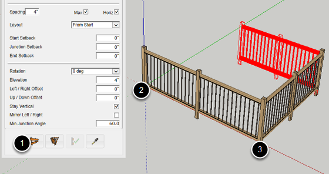
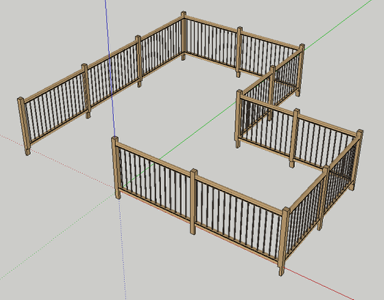

Now that you have created an assembly, it is time to build it!
1. Click the 'Build Assembly' Button.
2. Click a point in the model to define the start of the assembly.
3. Continue clicking points to define the path of the assembly.
To complete the assembly:
Press ESC or RETURN or ENTER
OR
Right-click and select 'Finish'
OR
Create a closed path for the Assembly.

Arrows Keys = Lock Axis
SHIFT = Lock Inference
CTRL / OPTION = Profile Member or Assembly path Inferecing (PMPI)
BACKSPACE = Undo the last path point
You can also enter values in the Measurements box to draw precisely.